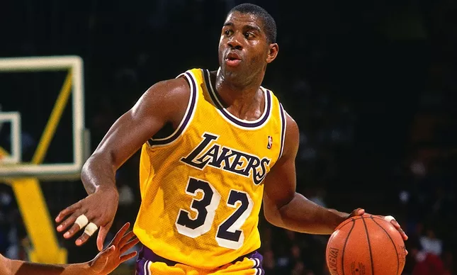

Magic Johnson
O Mestre das Assistências
5
Títulos
12
All-Star
Earvin "Magic" Johnson encantou o mundo com sua visão de jogo, criatividade e carisma. Um dos maiores armadores da história.

Magic Johnson é liderança, visão e magia em cada passe, uma inspiração para brilhar fazendo o que se ama.
Campeão com os Lakers na era Showtime, Magic redefiniu o basquete espetáculo.
Carreira com média de 11.2 assistências por jogo.
"O basquete é uma dança. Eu só conduzo o ritmo."
- Estreia: 1979
- Time: Los Angeles Lakers
- Altura: 2,06m
- Peso: 100kg
- Posição: Armador
- Prêmios: 3 MVPs da Temporada
Após a carreira, se tornou empresário e ativista. Um ícone também fora das quadras.
Magic é símbolo de superação e liderança.